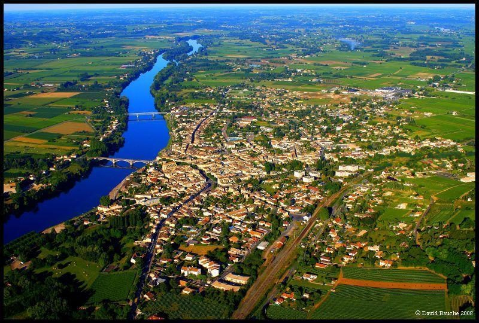
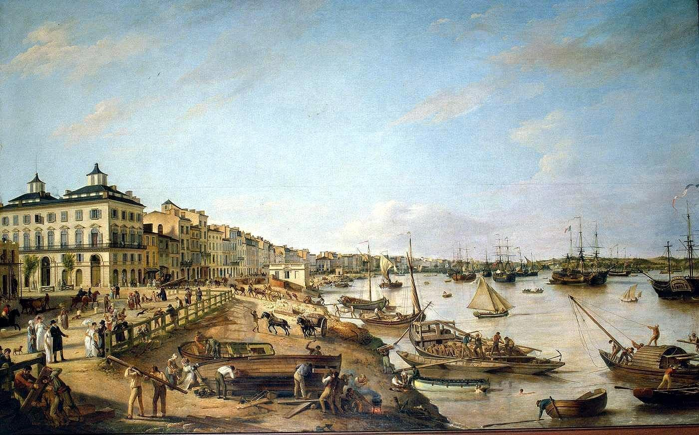
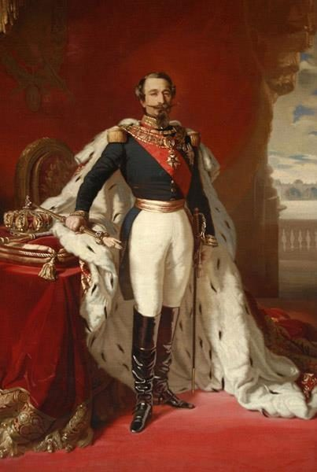
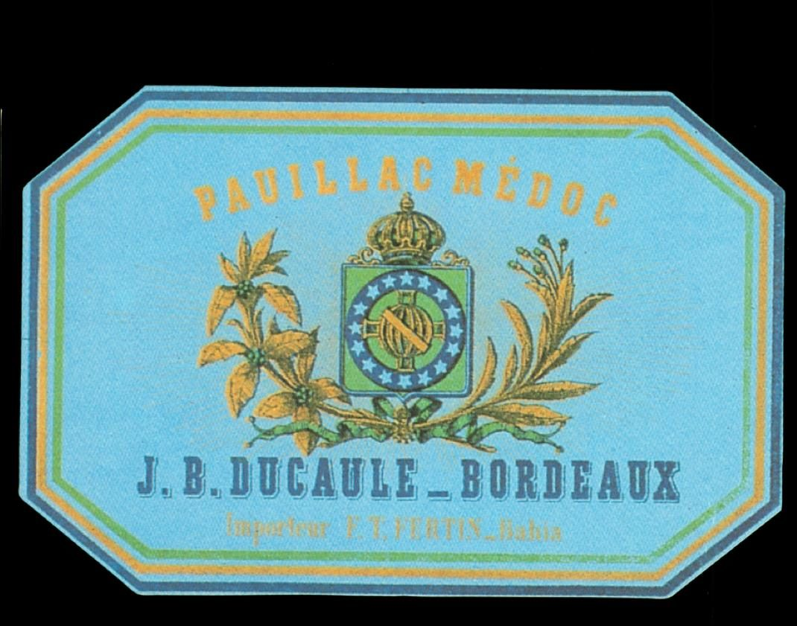
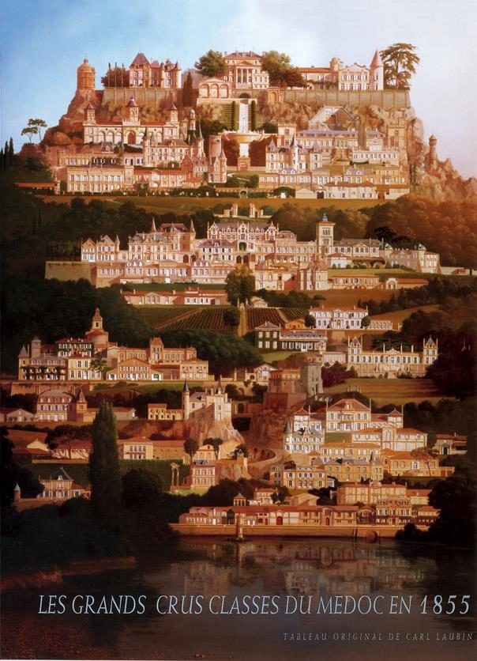

Apresentação · Bordeaux← AcademiaApresentação · Bordeaux← Academia
Apresentação · Bordeaux← AcademiaApresentação · Bordeaux← Academia
O desenvolvimento da vinha ao redor de Bordeaux parte da descoberta de uma variedade resistente aos invernos rigorosos, a Biturica — que toma o seu nome dos Bituriges Vivisques, habitantes de Burdigala, a atual Bordeaux.
Ali começa a primeira prosperidade, sob a ocupação romana, que instaura a Pax Romana e facilita as trocas comerciais. Com os privilégios de comércio e as isenções de taxas concedidas aos viticultores, as grandes propriedades galo-romanas cercam-se de vinhas, e o vinhedo conquista a região e as côtes das duas margens.
Um casamento basta para reviver as vinhas: o de Aliénor de Aquitânia, em 1152, com Henri Plantagenêt, futuro Rei da Inglaterra. Ele selaria o destino dos vinhos de Bordeaux e prefiguraria uma cultura dedicada à exportação.
Isentos de taxas pelo rei, os negociantes bordaleses fornecem generosamente a Inglaterra com o Claret, vinho muito apreciado pelos anglo-saxões. Duas vezes por ano — antes do Natal e da Páscoa — uma verdadeira frota, de até 200 navios, parte da Inglaterra em troca de têxteis, alimentos e metais. Bordeaux estabelece, assim, um monopólio de produção, venda e distribuição.
A formidável corrente de trocas é interrompida, de forma rápida e sangrenta, pela Guerra dos Cem Anos entre França e Inglaterra. Em 1453, a famosa batalha de Castillon devolve a Aquitânia à França, e Bordeaux é privada bruscamente do comércio com os ingleses.
Felizmente, Louis XI autoriza os navios britânicos a voltar ao porto de Bordeaux e, a partir de 1475, a situação se normaliza — embora o fluxo comercial só reencontre o seu volume anterior quase 200 anos depois.

Com mais estabilidade política e econômica, os negócios retomam em Bordeaux graças às trocas com os holandeses e as cidades da Hansa. Grandes comerciantes e compradores, os holandeses orientam a produção dos primeiros grandes vinhos — como o célebre HoBryan, futuro Haut-Brion.
Trazem também inovações, como a esterilização das barricas com enxofre para facilitar a conservação e o transporte. Instalam-se nos Chartrons, a dois passos dos cais — bairro de negociantes onde ainda hoje subsistem chais e casas exportadoras.

Em plena época colonial, Bordeaux assegura o seu crescimento exportando vinho para Saint-Domingue e as Pequenas Antilhas. O mercado inglês torna-se secundário, com 10% das exportações, mas permanece prestigioso.
Bordeaux fica famosa pela qualidade dos seus terroirs. De passagem pela cidade, em 1787, Thomas Jefferson, futuro presidente dos Estados Unidos, evoca uma classificação dos vinhos estabelecida pelos corretores. Surgem as primeiras garrafas tapadas e seladas, que pouco a pouco substituem o tonel no transporte. A arquitetura da cidade e os seus cais testemunham essa riqueza.
No início do século começa uma nova idade de ouro: em poucas décadas, a produção dobra e as exportações triplicam. Mas as trocas — sobretudo com os Estados Unidos — também favorecem a propagação de doenças e parasitas da vinha:
A pedido de Napoleão III, para a Exposição Universal de 1855, os corretores de Bordeaux classificam os melhores châteaux do Médoc em cinco níveis — e os de Sauternes e Barsac à parte. Nasce ali a mais célebre classificação de vinhos do mundo, praticamente intacta até hoje.

O Governo Francês mandou produzir 500 garrafas de Pauillac Médoc exclusivamente para o Rei Dom Pedro I, para estreitar as relações diplomáticas com o Brasil. Únicas, foram numeradas de 1 a 500 e importadas à época pela T. Fertin, da Bahia.
O design do rótulo, assinado por Adrien Nicolas Gaulon, traz o brasão do Brasil — um símbolo dessa relação entre Bordeaux e o nosso país, que a Commanderie hoje celebra.

De uma videira romana a um nome reconhecido no mundo inteiro, Bordeaux atravessou dois mil anos de história, reis e pragas para se tornar a maior região de vinhos finos do planeta — e o coração da nossa confraria.
